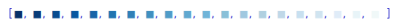
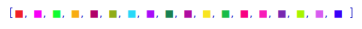
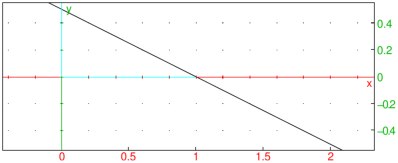

19.1.2 Graph and geometric objects attributes
There are two kinds of attributes for graphs and geometric objects:
global attributes of a graphic scene and individual attributes for
the specific geometric objects in the scene.
Individual attributes
Graphic attributes are optional arguments of the form
display=value. They must be given as the last
argument of a graphic instruction. Attributes are ordered in several
categories: color, point shape, point width, line style, line
thickness, legend value, position and presence. In addition, surfaces
may be filled or not, 3D surfaces may be filled with a texture, 3D
objects may also have properties with respect to the light.
Attributes of different categories may be combined with +, e.g. in:
| plotfunc(x^2+y^2,[x,y],display=red+line_width_3+filled) |
You can modify the following graphic attributes:
-
Color
- which is set with display=value or
color=value, where value is a nonnegative integer.
See Section 19.1.3 for more details on colors.
The predefined colors in Xcas are:
black,
white,
red,
blue,
green,
magenta,
cyan,
yellow,
brown,
purple,
violet,
pink,
orange,
grey,
teal,
olive,
navy, and
gold.
- Point shape
- which is set with display=value, where
value can be one of:
rhombus_point, plus_point,
square_point, cross_point,
triangle_point, star_point,
point_point or invisible_point.
- Point width
- which is set with display=point_width_n,
where n is an integer between 1 and 7.
- Line thickness
- which is set with thickness=n
or display=line_width_n where n is an
integer between 1 and 7.
- Line shape
- which is set with display=value,
where value can be one of:
dash_line, solid_line,
dashdot_line, dashdotdot_line,
cap_flat_line, cap_square_line or
cap_round_line.
- Legend
- where the text is set with
legend="legendname" and
the position is set with display=value,
where value is quadrantn for some
n∈{1,2,3,4}.
These values correspond to the position of the legend of the object
(using the trigonometric plane conventions).
The legend is not displayed if the attribute
display=hidden_name is added.
- Filling
- which is set with display=filled.
- Image texture
-
which is set gl_texture="picture_filename" and
fills a surface with a texture. See the interface manual for a more
complete description and for gl_material
options.
Examples
(See Section 26.9.3, Section 26.5.2,
Section 26.3.3 and Section 26.6.3 for information on
the commands used.)
| polygon(-1,-i,1,2*i,legend="P") |
| point(1+i,legend="hello") |
| color(segment(0,1+i),red) |

By entering
we get the same result as above.
Global attributes
The following attributes are pertinent to the scene as a whole:
-
axes=true or axes=false shows or hides the axes.
Alternatively, axes=a can be used, where a is a nonnegative integer.
The following values have effect:
-
a=1: the same as axes=true.
- a=0: the same as axes=false.
- a=2: show only the relevant portion of the ordinate (used for
bar plots).
- a=3: show the outer frame/ticks but not the green and red
inner axes (similar to Matlab).
- a=4: same as a=3, but the ordinate ticks
are not shown (used for drawing multi-channel waveforms and power spectra, where
y-values are not meaningful or significant).
- title="titlename" sets the title.
- labels=["xname","yname","zname"] sets
names of the x,y,z axes.
- gl_x_axis_name="xname",
gl_y_axis_name="yname",
gl_z_axis_name="zname" sets the names of the axes
individually.
- legend=["xunit","yunit","zunit"] sets
units for the axes.
- gl_x_axis_unit="xunit",
gl_y_axis_unit="yunit",
gl_z_axis_unit="zunit" sets units for the axes
individually.
- gl_texture="filename" sets the background
image to filename.
- gl_x=xmin..xmax,
gl_y=ymin..ymax,
gl_z=zmin..zmax sets the graphic configuration
(do not use for interactive scenes)
- gl_xtick=xmark,
gl_ytick=ymark, gl_ztick=zmark
sets the tick marks for the axes.
- gl_shownames=true or gl_shownames=false
shows or hides objects names
- gl_rotation=[x,y,z] defines the rotation axis
for the animation rotation of 3D scenes.
- gl_quaternion=[x,y,z,t] defines the quaternion
for the visualization in 3D scenes (do not use for interactive
scenes).
- a few other OpenGL light configuration options are
available but not described here.
Examples
| title="median_line";triangle(-1-i,1,1+i);median_line(-1-i,1,1+i);
median_line(1,-1-i,1+i);median_line(1+i,1,-1-i) |
| labels=["u","v"];plotfunc(u+1,u) |

Formatting textual annotations
There are several formatting options for the textual attributes
(title, labels, and legend). Note that they
can be used only in 2D plots.
-
"*This is bold*" draws the text in a bold sans serif font.
- "/This is italic/" draws the text in an italic sans serif font.
- "$This is mathmode$" draws the text in a serif font and
enables the following mathematical typesetting options:
-
^int, where int is an integer, prints
int in the exponent (also available outside math mode).
- @char, where char is a letter,
draws char with slanted font (useful for variables in formulas).
- -- (double hyphen) prints as a minus sign − (which is
different than the ordinary hyphen!).
- <= resp. >= prints as ≤ resp. ≥.
- +- resp. -+ prints as ± resp. ∓.
- == prints as ≡.
- != prints as ≠.
- prints as ≈.
- \/ prints as √ . Note that the backslash must be
escaped, i.e. entered as \\.
- -> prints as →.
- => prints as ⇒.
- ** prints as ⋯ (vertically centered dots).
- *, when preceded/followed by an alphanumeric character or parenthesis,
is printed as · (the multiplication dot).
- __ (double underscore) prints as — (em dash).
- ^C prints as ∘C.
- ^F prints as ∘F.
Note that changing font to bold, italic or serif typeface can only be applied to
the entire text. The @-option uses special slanted Unicode symbols.
Example
| axes=0;
legend(i,"*This is bold text*");
legend(.5i,"/This is italic text/");
legend(1.5i,"Spectral energy density [W/m^3]");
legend(1+1.5i,"$pi^2/6 = 1^-2 + 2^-2 + 3^-2 + ** (Basel problem)$");
legend(1+i,"$@f(@x) = 1 -- @x -- @x^2 = 0 => @x = --(1 +- \\/5)/2$");
s1:="alpha*sin(@x--beta) + beta*cos(@x--alpha) <= alpha + beta":;
s2:="alpha, beta > 0":;
legend(1+.5i,"$"+s1+" for "+s2+"$") |
